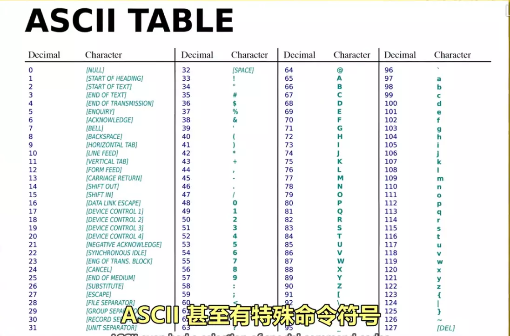
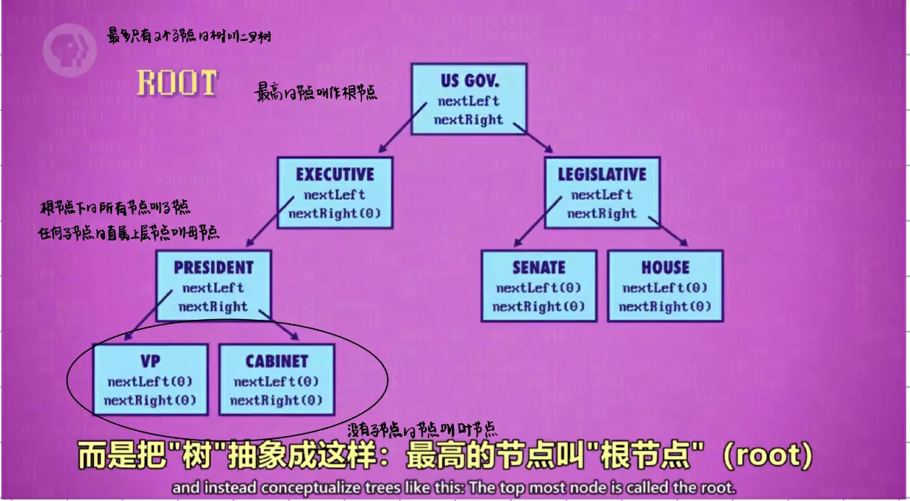

Notes of Crash Course Computer Science
主讲：Carrie Anne
第三课：布尔逻辑与逻辑门
- 变量：没有常数，仅 True 和 False 这两个变量。
- 三个基本操作：NOT / AND / OR。
- 为什么称之为“门”：控制电流流过的路径
1、计算机为什么使用二进制
- 计算机的元器件晶体管只有 2 种状态，通电（1）&断电（0），用二进制可直接根据元器件的状态来设计计算机。
- 而且，数学中的“布尔代数”分支，可以用 True 和 False（可用 1 代表 True，0 代表 False）进行逻辑运算，代替实数进行计算。
- 计算的状态越多，信号越容易混淆，影响计算。对于当时每秒运算百万次以上的晶体管，信号混淆是特别让人头疼的的。
2、晶体管的结构
晶体管有三根线：2 根电极和一根控制线。当控制线通电时，电流就可以从一个电极流向另一个电极。

晶体管可以完美实现三种逻辑基本运算
2、非门 NOT，与门 AND，或门 OR，异或门 XOR
这里着重说一下异或门：当 2 个输入均为 True 时，输出 False，其余情况与或门相同
- 非门在晶体管中的实现：一个电极接地，一个电极带电

- 与门在晶体管中的实现：两个晶体管串联

- 或门在晶体管中的实现：两个晶体管并联

第四课：二进制
1、1 位二进制数字命名为位（bit），也称 1 比特。
2、字节的由来
最早期的电脑为八位的，即以八位为单位处理数据。为了方便，将八位数字命名为 1 字节（1 Byte）。
3、计算机的位数表示计算机中一块块的处理数据（单位内存），每块是32位或64位
4、32位与64位：指的是计算机单个内存的位数
32 位的最大数为 43 亿左右 32 位能表示的数字：0 ～ 2 的 32 次方 - 1，一共2的32次方个数64 位的最大数为 9.2*10^18
5、正负整数和浮点数在计算机内存中的表示
-
整数
-
第一位：表示正负（1 是负，0 是正）
-
其余31/63位：表示实数（任何十进制数都可以被唯一转换为二进制）
-
浮点数（小数点可以在数字之间浮动的数）
-
表示：有效位数 * 指数
- 32 位数字中，第 1 位表示正负，第 2-9 位存指数。剩下 23 位存有效位数
6、ASCII 码

7、UNICODE：统一所有字符编码的标准
- 诞生背景：1992 诞生，随着计算机在亚洲兴起，需要解决 ASCⅡ不够表达所有语言的问题。为提高代码的互用性，而诞生的编码标准。
- 内容：UNICODE 为 17 组的 16 位数字，有超过 100 万个位置，可满足所有语言的字符需求。
第五课：ALU
1、算术逻辑单元（ALU）
- 组成：ALU有两个单元，1个算数单元和1个逻辑单元
- 作用：计算机中负责运算的组件，处理数字/逻辑运算的最基本单元
算数单元
负责计算机里的所有数字操作，比如加减法
半加器：实现两个单 bit 的计算，如0+0=0。那么输入有四种可能，输出有三种可能。

carry是表示进位的线
全加器：实现三个单 bit 的计算


half adder 表示半加器；or 表示或门
半加器的两个输入是等价的；全加器的三个输入是等价的
8 位加法器：实现两个 8 bit 二进制数字相加

-
A、B 两个二进制数字的第一位（两个输入）用半加器，A、B 两个数字的第二位和第一位的进位（三个输入）用全加器（后面 3-8 位与第二位相同）
-
输出是一个八位二进制数字。如果输出太大出现了第九位，我们就把这种现象叫做溢出（overflow）。
-
根据这种原理，我们可以制作出16位，32位，64位等的多位加法器
注意，现代计算机的加法原理已经改变，它叫做 超前进位加法器 ，但是作用与一般的加法器都是一样的，即把两个二进制数字相加
除了加法以外，ALU 还可以做的运算类型：

逻辑单元
逻辑单元执行逻辑操作：如检查算数单元的输入是否为 0（输出一般只有 true 和 false）。
所谓 ALU ，不过只是好多个逻辑门巧妙的连接在一起
在 ALU 中每种运算都由相应的算数单元负责（一对一），各司其职
2、宏观来看 ALU
用一个大“V”来表示 ALU
ALU 有三个输入：两个数字输入端与一个操作代码输入端

ALU 的输出：分为结果输出和标志输出

标志输出一般有：
- 零标志
- 负标志
- 溢出标志（常用来连接到加法器的进位）
第六课：寄存器和内存
随机存取存储器（RAM）
- 只能在有电的情况下存储东西
持久存储（memory）
- 电源关闭时数据也不会消失
锁存（latch）器
AND-OR锁存器

- 仅SET线有信号，锁存器锁住1；仅RESET线有信号，锁存器锁住0
门锁锁存器（gated latch） - 单 bit 锁存器

- 当允许写入线为 1 时，门锁中锁住的值与数据输入线一致
- 当允许写入线为 0 时，无论数据输入线的值为多少，门锁中的值都不会改变
寄存器（register）
由多个锁存器组成的可以存储高位数字的叫做寄存器，寄存器能存储的位数叫做位宽，如16位，32位等

高位寄存器
对于高位寄存器，我们可以采用矩阵（matrix）的排列方式

- 当要启用某个锁存器，就打开相应的行线和列线
- 在 256 个锁存器中，每次只有一个锁存器会被设置为允许写入 - 这样就可以使这 256 个锁存器公用一条数据输入线 [2]：

- 我们可以使用 [2] 的方式做“允许读取线”，从一个指定的锁存器读取数据
这样，我们就可以只用 35 根线（一条数据输入线，一条允许写入线，一条允许读取线，16+16 条行列线）连接 256 个锁存器
地址
以16*16寄存器为例，12 行 8 列的地址就可以表示为 11001000
- 由于最多 16 行/列，用 4 位（二进制）就够了
- 12 用二进制表示为 1100
- 8 用二进制表示为 1000
多路复用器
- 作用：将二进制地址转换为行和列
- 多路复用器有不同大小，对于
16*16来说，我们需要两个 1 到 16 多路复用器

RAM
接下来我们将一个 256 位寄存器看作一个整体

把它们并排放置：

- 为了存一个八位（二进制）数字，我们同时给 8 个 256 位寄存器同样的地址
- 可以存储 256 个八位二进制数字（256 个 Byte）
下面我们把上图再次进行抽象，看成一个整体可寻址的内存：

- 256 个地址
- 每个地址可以存放一个 Byte
特点
- RAM 可以可以随时访问任何位置
注：
RAM 也有好多种类型：上述 RAM 为 SRAM（静态随机存取存储器），此外还有，DRAM、闪存、NVRAM。这些技术根本上都是矩阵的层层嵌套，来存储大量信息
对于现代计算机，要给 GB 级的内存寻址，需要 32 位（或 64 位）的地址
第七课：CPU（中央处理单元）
我们通过微体系架构这一高层次视角来学习
这里的 RAM 是一个简化版的 RAM，只有 16 个内存地址，每个地址 1 Byte
数据是以二进制的形式存在内存里的，程序也可以保存在内存里
下面我们一点点来搭建一个简易的 CPU
指令表

- 给 CPU 支持的所有指令分配一个 ID
- 在这里我们假定前四位存操作代码（opcode），后四位代表数据来自哪里（这里是直接的内存地址，也可以是寄存器）
四个 8 bit 寄存器

- 用来临时存数据和操作数据
指令地址寄存器和指令寄存器
- 指令地址寄存器用来追踪程序运行到哪里了 - 即存当前指令的内存地址（一个程序由多个指令组合而成）
- 指令寄存器用来存当前指令
下面我们来以一个程序为例过一遍 CPU 的运行过程
程序大小为 4 Byte，占用 RAM 的前四个内存单元，效果为将两个数相加并将结果存到 RAM 中
程序被放到了这个 16 Byte 的 RAM 中
1、取指令阶段

- 所有寄存器都从零开始
- 由于指令地址寄存器为 0，故将 RAM 中地址为 0 的数据复制到指令寄存器
2、解码阶段

- 指令由”控制单元“进行解码（控制单元也由逻辑门的组合构成，图中就是用来检查操作码是否是0010的逻辑门电路）
3、执行阶段

- 用
检查是否是 LOAD_A 指令的电路打开 RAM 的允许读取线，把地址 00001110（十进制的14）传过去 - 地址14中的值是 00000011（十进制的3），用一根线共同连接 RAM 与四个寄存器，用来传入数据
- 用
检查是否是 LOAD_A 指令的电路启动寄存器A的允许写入线 - 最后把
指令地址寄存器+1
这样就把 RAM 中地址为14的值放到了 A 中
注意：
- 上面前三条只是对于 LOAD_A 程序的特例，不同的程序的执行阶段步骤完全不同
- 不同的指令由不同的逻辑电路解码，这些逻辑电路会配置CPU内的组件来执行对应的操作
所谓程序其实就是不同操作码的排列组合
时钟
时钟：负责管理 CPU 运行的节奏，以精确地间隔，触发电信号，控制单元用这个信号，推动 CPU 的内部操作。 * 时钟速度：CPU 执行“取指令→解码→执行”中每一步的速度叫做“时钟速度”（即每秒执行指令的数量），单位赫兹Hz，表示频率。 * 超频/降频： * 超频，修改时钟速度，加快 CPU 的速度，超频过多会让 CPU 过热或产生乱码。 * 降频，降低时钟速度，达到省电的效果，对笔记本/手机很重要。
有了以上几个部件，我们的 CPU 就算建好了
注：这里的 ALU 是执行如将两个数相加并将结果返回（4 Byte 程序的第三个opocde）这类数值计算操作

总结：CPU 内部实际就是 寄存器 + ALU + 用于实现不同 opcode （解码）的逻辑门电路和指令地址寄存器和指令寄存器（即控制单元 control unit）（opcode 对于 CPU 来说具有特异性）
第八节：指令和程序
指令
LODA 指令
- 如 LOAD_A，即计算机按照地址（我们假设的八位地址）中后四位所指地址（14），把地址 14 中的数据存入寄存器 A
ADD（加）/SUB（减） 指令
- ADD B A 指令告诉 ALU，把寄存器 B 和寄存器中的数字加起来，存到寄存器 A 中。
JUMP 指令
- 即更改指令地址寄存器的值。如 JUMP 2 指令就是把指令地址寄存器中的值改为 2 ，使下一个 opcode 从地址为 2 的位置开始
- 遇到 JUMP 指令，程序会跳转至对应的 RAM 地址读取数据。
- JUMP 指令可以有条件跳转（如 JUMP-negative 只在 ALU 的复数标志为false时才可以执行），也可以无条件跳转。
HALT 指令
- 告诉程序何时停下来，即程序的终点
- 由于程序和数据是以同样的形式存到内存中的，所以 HALT 指令对于区分程序和数据十分重要
一个做除法并求余数的程序

下面我们以真正的 CPU 为例
1971 年的英特尔 4004 处理器，支持 46 个指令（足够做一台能用的电脑）

对于现代 CPU 来说，如英特尔 core i7，支持上千个指令和指令变种
第九课：高级 CPU 设计
更强大的 ALU
如 ALU 可以直接执行除法操作
专用的处理单元
现代 CPU 有专门的电路单元来专门处理图形操作，解码压缩视频，加密文档等等（这就是所谓的硬件解码）。这些操作如果用标准 opcode 来实现（软件解码），要很多个周期
CPU 内部缓存
-
解决 RAM 传入数据速度不够问题
-
CPU 从 RAM 拿数据时，RAM 不用传一个，可以传一批
-
缓存距离 CPU 的各个单元更近，一个时钟周期就能给数据，CPU 不用空等
-
缓存也可以当临时空间，存一些中间值，适合长复杂运算
-
一般 CPU 的计算结果会优先存到缓存中，这样保存更快，取值也更快
脏位
缓存的中每块空间中有一个特殊标记的位置，用来存储与 RAM 不一致的数据，这个位置叫做脏位（dirty bit）
- 解决要把缓存中的 CPU 的计算结果存到 RAM 中的问题
同步
- 同步一般发生在当缓存满了而 CPU 又要缓存时
- 在清理缓存腾出空间之前，会先检查脏位，如果脏位是“脏的”，在加载新内容之前，会把数据写回 RAM
缓存命中与缓存未命中
- 如果想要的数据已经在缓存中，叫做缓存命中（cache hit）
- 如果想要的数据不在缓存中，叫做缓存未命中（cache miss）
指令流水线（instruction pipelining）
并行处理（parallelize）：
由：

变为：

- 即 执行一个指令时，同时解码下一个指令，读取下下个指令，不同任务重叠进行，同时用上 CPU 里所有部分
- 吞吐量 * 3
带来的问题：
- 指令之间的依赖关系，如当你在读某个数据时，正在执行的指令会改这个数据
因此流水线处理器要先弄清数据的依赖性，必要时暂停处理。
- 条件跳转会改变程序的执行流
乱序执行（out-of-order execution）
解决问题一
即 可以动态排序有依赖关系的指令的能力，使执行之间不相冲突
推测执行（speculative execution）和分支预测（branch prediction）
即 预测程序中 JUMP 的跳转位置，并根据预测提前把下一条指令放入“流水线”
- 如果猜对了，那么流水线就已经填满了正确指令，可以马上运行
- 如果猜错了，就要清空流水线
- 现代 CPU 的预测成功率超过 90%
多加几个相同单元
如多加几个 ALU ，可以同时执行多个数学运算
多核心与多 CPU
就像是有多个独立的 CPU，但因为它们整合紧密，可以共享一些资源，如缓存，使得多核可以协作运算
第十课：早期编程方式
1、冯诺伊曼结构
- 程序和数据都存在一个地方，叫做冯诺伊曼结构（Von Neumann Architecture）
- 冯诺伊曼计算机的标志是：一个处理器(有算术逻辑单元) + 数据寄存器 + 指令寄存器 + 指令地址寄存器 + 内存
- 现代计算机都是冯诺伊曼结构
2、早期计算机的编程
- 打孔纸卡/纸带：在纸卡上打孔，用读卡器读取连通电路，进行编程。原因，穿孔纸卡便宜、可靠也易懂。
- 数据插线板：通过插拔线路的方式，改变器件之间的连接方式，进行编程。
- 面板开关（1980s 前）：通过拨动面板上的开关，进行编程。输入二进制操作码，按存储按钮，推进至下一个内存位，直至操作完内存，按运行键执行程序。（内存式电脑）
第十一课：编程语言发展史
机器语言（machine language）或机器码（machine code）
在计算机的早期阶段，必须用机器码写程序
具体来讲：
- 先在纸上用英语写下对程序的高层次版描述，这叫做“伪代码”（pseudo-code）
- 之后根据
操作码表把伪代码转换为二进制机器码
汇编语言 -- 助记符（mnemonics）与数据（operands）
- 每个操作码对应一个助记符，如 0010 对应 LOAD_A
- 助记符后面紧跟数据，如 LOAD_A 14，这就是汇编语言
汇编语言与机器指令是一一对应的
汇编器（assembler）
- 可以把 助记符+数据（汇编语言） 自动转换成二进制指令
算数语言版本 0（A - 0） -- by Hopper
汇编语言与机器指令是一一对应的，但一行高级编程语言，可能会转成几十条二进制指令
Hopper 在 1952 年创造了第一个编译器，用来将高级语言转换为汇编语言或机器码
但由于当时人们认为，计算机只能做计算，而不能做程序，A-0 未被广泛使用。
FORTRAN 语言
由 IBM 在 1957 年发布，主宰了早起计算机编程
COBOL 语言
社会各界在 1959 年组建了一个联盟：数据系统语言委员会，Grace Hopper 担任顾问。
他们研发出一门高级语言，可以在不同机器上通用，即“普通面向商业语言”，简称 COBOL。
- 在每个不同的计算架构上都需要一个 COBOL 编译器，不管是什么电脑都可以运行相同的代码，得到相同结果。
现代编程语言
- 1960s 起，编程语言设计进入黄金时代。
- 1960：LGOL, LISP 和 BASIC 等语言
- 70 年代有：Pascal，C 和 Smalltalk
- 80 年代有：C++，Objective-C 和 Perl
- 90 年代有：Python，Ruby 和 Java
- 2000 年代：Swift，C#，Go 正在崛起
第十二课：编程原理
变量、赋值语句，if 判断，while 循环，for 循环，函数
第十三课：算法入门
大 O 表示法
算法复杂度：算法的输入大小和运行步骤之间的关系，叫做算法的复杂度，表示运行速度的量级
排序
1、选择排序 - 最基本的排序算法
伪代码如下：

swap - 交换
index - 下标
对此：
- 如果要排 N 个东西，就要循环 $N$ 次，每次循环中再循环 $N$ 次，共 $N^2$ 次。因此，此算法的复杂度为 $O(N^2)$（并不快）
2、归并排序

- 第一件事是检查数组大小是否 > 1，如果是，就把数组分成两半。最后变成 8 个数组，每个大小为 1
- 现在可以"归并"了：从前两个数组开始，读第一个（也是唯一一个）值，307 和 239，239 更小，所以放前面；剩下的唯一数字是 307 ，所以放第二位；成功合并了两个数组。
- 重复这个过程，按序排列后面三组数。

这时，归并排序的单位就由一个数变成了由两个数组成的数组
- 然后再归并一次：同样，取前两个数组，比较第一个数，239 和 214，214 更小，放前面；再看两个数组里的第一个数：239 和 250，239 更小，所以放下一位；看剩下两个数：307 和 250，250 更小，所以放下一位；最后剩下 307 ，所以放最后

总结：每次都以 2 个数组开始，然后合并成更大的有序数组。
算法复杂度为：$O(n*logn)$
图搜索（最短路径）
1、蛮力方法
尝试每一条线路
时间复杂度为 $O(n!)$
2、Dijkstra 算法
- 将起点的成本标为 0，其他城市标为问号，因为不知道成本为多少
- 从成本最低的节点开始，目前只知道一个节点 "高庭", 所以从这里开始。
- 跑到所有相邻节点，记录成本。
- 完成了一轮算法

但还没到"凛冬城"，所以再跑一次 Dijkstra 算法：
- 下一个成本最低的节点，是 "君临城"，就像之前，记录所有相邻节点的成本，到"三叉戟河"的成本是 5，然而我们想记录的是，从"高庭"到这里的成本，所以"三叉戟河"的总成本是 8+5=13周
- 现在走另一条路到"奔流城"，成本高达 25 ，总成本 33，但 "奔流城" 中最低成本是 10，所以无视新数字，保留之前的成本 10。

现在看了"君临城"的每一条路，还没到"凛冬城" 所以继续：
- 下一个成本最低的节点，是"奔流城"，要 10 周。先看 "三叉戟河" 成本： 10+2=12，比之前的 13 好一点，所以更新 "三叉戟河" 为 12。
- "奔流城"到"派克城"成本是 3，10+3=13，之前是14，所以更新 "派克城" 为 13
- "奔流城"出发的所有路径都走遍了

再跑一次 Dijkstra 算法：
- 下一个成本最低的节点，是"三叉戟河"。从"三叉戟河"出发，唯一没看过的路，通往"凛冬城"！成本是 10，加"三叉戟河"的成本 12，总成本 22。
- 再看最后一条路，"派克城"到"凛冬城"，成本 31
- 现在知道了最低成本路线，让军队最快到达
此算法的时间复杂度为 $O(n^2)$，后期经过优化，时间复杂度变为了 $O(n*logn + l)$（n是节点数，l是有多少条线）
第十四课：数据结构
数组（array）
数组（Array），也叫列表（list）或向量（Vector），是一种数据结构。为了拿出数组中某个值，我们要指定一个下标（index），大多数编程语言里，数组下标都从 0 开始，用方括号 [ ] 代表访问数组。
- 在内存中连续存储
- 注意下标从 0 开始，所以 j[3] 实际是数组 j 的第四个数
- 一般的语言中都有很多数组处理函数，如数组排序函数
字符串（string）
实际就是字母、数字、标点符号等 组成的数组
- 注意字符串在内存里以 0 结尾（不是“字符0”，而是“二进制0”，这叫字符“null”，表示字符串结尾）
- 有很多函数专门用于处理字符串
矩阵（matrix）
可以把矩阵看成 数组的数组
矩阵（多维数组）存储方式：

- 第一个方括号表示 行 ，第二个方括号表示 列 。
- 矩阵有高维矩阵，如
j[2][2][1][4] = 1;
结构体（struct）
把多个不同数据类型的变量打包在一起叫做结构体
链表
节点（node）结构体
- 节点 中有 next指针 和 数据
- next指针 指向 下一个节点
- 不同节点在内存中不是连续的
链表由多个节点构成，分为循环链表和非循环链表，非循环链表的最后一个节点的next指针为0。
队列（queue）
一种特殊的链表

- 队列是先进先出（First-In First-Out（FIFO））
- pointer 一直指向链表起点，要想删除数据就把 pointer 指向第二个 node 即可，这样第一个 node 就被出队（dequeue）了
- 要想添加数据，也叫入队（enqueue），就把链表尾指针指向新的数据
- 即 只能在队列头移除数据，只能在队列尾部添加数据
栈（stack）
- 栈是后进先出（Last-In First-Out（LIFO））
- 就像一堆松饼，放只能放在最上层，取也只能从上往下取
- 出栈（pop），入栈（push）
树（trees）

图（graph data）
如果数据随意连接，有循环，我们称之为图
第十五课：阿兰·图灵
计算机科学之父
可判定性问题：
是否存在一种算法，输入正式逻辑语句 输出准确的"是"或"否"答案？
Lambda算子
阿隆佐邱奇，Lambda算子美国数学家 阿隆佐·丘奇，开发了一个叫"Lambda 算子"的数学表达系统，证明能够解决任何可判定性问题的机器不存在。
图灵机
图灵机是一台理论计算设备。
- 有无限长的纸带，纸带可以存储符号
- 还有一个读写头，可以读取和写入纸带上的符号
- 还有一个状态变量，保存当前状态
- 还有一组规则，描述机器做什么，规则是根据
当前状态+读写头看到的符号决定机器要做什么 - 结果可能是
在纸带上写入一个符号，或改变状态，或把读写头移动一格，或执行这些动作的组合
图灵证明了图灵机只要有足够的规则，状态和纸带，图灵机可以解决一切计算问题。
图灵完备
和图灵机一样强大，叫做图灵完备。
每个现代的计算系统都是图灵完备的，如手机，或微波炉中的微型电脑
停机问题
图灵对停机问题的研究，证明不是所有的问题都能用计算解决，如停机问题。
丘奇和图灵证明了计算是有极限的，起步了可计算理论，现在叫“丘奇-图灵论题”
图灵测试
图灵测试向人和机器同时发信息，收到的回答无法判断哪个是人，哪个是计算机，则计算机达到了智能程度。
第十六课：软件工程
对象（object）
把函数（function）打包成子对象，把一些子对象、一些函数和一些变量打包成对象。
也就是对象可以包含 其他对象、函数和变量
如：
- 把
设定速度函数、逐渐加速函数、逐渐减速函数、停止定速巡航函数这几个相关函数包装成一个定速巡航对象：

定速巡航只是引擎软件的一部分，我们还有火花塞、燃油泵、散热器等。我们可以做一个引擎对象，来包括所有的子对象：

- 除了子对象，引擎对象可能还有自己的函数和变量：

- 当然，引擎对象只是汽车对象的一部分，除此之外，我们还有传动装置、车轮、门、窗等：

这样，我们就创建了一个对象
如果要设定某个函数，就要一层一层的从最外面的对象往里找，最后找到要执行的函数：
Car.Engine.CruiseControl.setCruiseSpeed(55)
这就叫做面向对象（object oriented，简称OO）的编程 - 通过封装组件，隐藏复杂度，选择性的公布功能。（核心）
如 C++，C#，java，python都是面向对象的编程语言
程序编程接口（application programming interface，简称 API）
- API控制哪些函数和数据让外部访问，哪些仅供内部。
- 如面向对象的编程语言可以指定函数是 public 或 private，来设置权限
- private 函数只能被同一个对象内的其他函数调用
- public 函数可以被外部对象中的函数调用

在这个例子里：
- 只有内部函数如 setRPM 可以调用点火函数 fireSparkPlug
- 而 setRPM 可以被别的对象如定速巡航内的函数调用
集成开发环境（IDE）
集成开发环境（intergrated development environments，简称 IDE）
为代码写文档（documenting）
- 文档一般放在一个叫做 README 的文件中
- 文档也可以直接写成注释
- 写文档是十分十分十分重要的，帮助自己和别人在几个月之后看到仍然可以理解代码
- 读文档看怎么用就行，不用不代码
源代码管理（source control）
也叫版本控制
- 把代码放入仓库的过程叫 提交（commit）
- 代码的主版本（master），应该总是编译正常，尽可能少 bug
- 源代码管理允许 回滚（rolled back）到之前的版本
- 源代码管理能够记录谁改了什么代码
质量保证测试（quality assurance testing，简称QA）
- 测试（找bug）一般由小团队或个人进行
- beta 版软件指软件接近完成，但不是 100% 完全测试过
- alpha 版软件指公司内部很粗糙，错误很多的软件，只在公司内部测试
第十七课：集成电路与摩尔定律
分立元件（discrete components）与数字暴政（tyranny of numbers）
- 1940-1960年代中期，计算机都由独立部件组成（最开始是电子管，后来发展成晶体管），然后不同组件再用线连在一起，叫分立元件
- 如果想提升性能，就要增加更多组件，这导致更多电线，更复杂，这个问题叫数字暴政
- 晶体管标志着 计算2.0时代 的到来，但依然没有解决数字暴政的问题
集成电路（integrated circuits，简称 IC）和印刷电路板（printed circuit boards，简称 PCB）
- 1959年 Robert Noyce 的仙童半导体让集成电路变为现实。Noyce 也被公认为现代集成电路之父
- PCB 可以大规模生产，无需焊接或用一大堆线。它通过蚀刻金属线的方式，把零件连接到一起
- 把 PCB 和 IC 结合使用，可以大幅减少独立组件和电线，但实现相同的功能，且更小，更便宜，更可靠
光刻
简单说就是，用光把复杂图案印到材料（如半导体）上，它只有几个简单步骤，却可以制作出复杂电路
步骤：
- 获得一块 晶圆（wafer），硅是半导体，有时导电，有时不导电，可以控制导电时机。
- 在硅片顶部，加一层薄薄的氧化层，作为保护层
- 然后再加一层特殊化学品，叫“光刻胶”。光刻胶被光照射后，会变得可溶，可以被一种特殊的化学物质洗掉
- 最后在上面加一层光掩膜
 （图1-4）
（图1-4）
- 再用强光照射，挡住光的地方，光刻胶不会变化，光照到的地方，光刻胶会发生变化，洗掉它之后，暴露出氧化层
- 用另一种化学物质 - 通常是一种酸，洗掉氧化层露出的部分，蚀刻到硅层。
- 再用另一种化学物质洗掉没有发生变化的光刻胶
 （图5-7）
（图5-7）
- 用一种高温气体（如磷）来改变硅暴露出的部分的电学性质，叫做 掺杂（doping）
 （图8）
（图8）
第一轮光刻就结束了
- 我们还需要几轮光刻，来做晶体管，过程基本一样，先盖氧化层，再盖光刻胶，然后用图案不同的光掩膜，在掺杂区域上方再开一个缺口，洗掉光刻胶，然后用另一种气体掺杂，把一部分硅转化成另一种形式。
 （图9）
（图9）
现在，我们所需要的组件就都有了。
- 最后一步，仍然是用光刻胶和光掩膜在氧化层上做通道，然后再用一种新的方法 - 金属化，即在氧化膜上盖一层薄金属，再用光刻胶和光掩膜把不需要的金属蚀刻掉，剩下所需导线，连接硅的三个不同区域。
每个区域掺杂方式不同，这叫双极型晶体管
 （图10）
（图10）
光刻精度的提升

光刻技术的应用
芯片，内存，显卡，固态硬盘，摄像头感光元件
芯片设计不是完全人工连线，而是用专门软件辅助
摩尔定律
1965年，戈登·摩尔看到了趋势：每两年左右，得益于材料和制造技术的发展 \N 同样大小的空间，能塞进两倍数量的晶体管！这叫 摩尔定律。
摩尔定律的失效
坏消息是，专家们几十年来 \N 一直在预言摩尔定律的终结。现在可能终于接近了。
将精度进一步做高，会面临 2 个大问题：
- 光刻是用
光掩膜把图案弄到晶圆上，因为光的波长，精度已达极限。所以科学家在研制波长更短的光源，投射更小的形状。 - 当晶体管非常小，电极之间可能只距离几个原子，电子会跳过间隙，这叫：量子隧道贯穿
第十八课：操作系统
操作系统（operating systemss，简称 OS），其实也是程序，但它拥有操作硬件的特殊权限，可以运行和管理其他程序。操作系统一般是开机第一个启动的程序，其他的程序都由操作系统启动。
早期操作系统
- 批处理：一个程序运行后会自动运行下一个程序。
- 充当硬件和软件之间的媒介，即提供 API 来抽象硬件，这叫做 设备驱动程序（device drivers）。这就使程序员可以用标准化机制，和 输入输出硬件（input & output，简称 I/O）（如打印机）交互
Atlas Supervisor
为了喂饱超级计算机 Atlas 的速度，于1962年完成
- 多任务处理（multitasking）：不仅能批处理，还可以在单个 CPU 上运行多个程序
- 原理：在一个程序执行到 print 代码且调用 I/O（打印机）进行打印时，将这个程序休眠，运行另一个程序。最终，打印机会告诉 Atlas ，打印已经完成，Atlas 会把第一个程序标记为可继续运行，之后在某时刻会安排给 CPU 运行，并继续 print 语句之后的下一行代码
- 虚拟内存（virtual memory）：任何程序都可以假定内存总是从 0 开始且连续的。而内存实际的物理位置则被操作系统隐藏和抽象了。操作系统会自动处理虚拟内存和物理内存之间的映射。这也叫做 动态内存分配（dynamic memory allocation）。这样做对于隔离也有好处，程序只能改变自己的内存，这叫 内存保护（memory protection）
分时操作系统
- 终端（terminal）：终端只是键盘加屏幕，连接到主计算机，终端本身没有处理能力。
- 这时操作系统不但要处理多个程序，还要处理多个用户，分时操作系统可以实现每个用户只用一小部分处理器，内存等。
Multics
发布于 1969 年
从设计时就考虑了安全，这在当时导致操作系统过大
Unix
由 Dennis 和另一个 Multics 研究员 Ken Thompson 联手打造
- 他们把操作系统分成两部分：
- 首先是操作系统的核心功能，如内存管理，多任务和输入/输出处理，这叫"内核"
-
第二部分是一堆有用的工具，但它们不是内核的一部分（比如程序和运行库）
-
Unix 十分简单，不会有类似 Multics 的错误恢复代码，这就使 Unix 可以在更便宜更多的硬件上运行
第十九课：内存和存储介质
打孔纸卡，打孔纸带

延迟线存储器（delay line memory）
J. Presper Eckert 在 1944 年建造 ENIAC 时发明的一种方法
原理：拿一个管子装满液体，如水银，管子一端放扬声器，另一端放麦克风，扬声器发出脉冲时会产生压力波，压力波需要时间传播到另一端的麦克风，麦克风将压力波转换回电信号，加一个电路，连接麦克风和扬声器，再加一个放大器（Amplifier）来弥补信号衰弱，就能做一个存储数据的循环，这样就能存储数据。

但这种存储器有一个缺点，即每个时刻只能读 1 bit 数据，如果想访问一个特定的 bit，比如第 112 位(bit) 你得等待它从循环中出现。所以又叫"顺序存储器"或"循环存储器"
磁芯存储器（magnetic core memory）
原理：给磁芯绕上电线，并施加电流，可以将磁化在一个方向，关掉电流，磁芯保持磁化，如果沿相反方向施加电流，磁化的方向（极性）会翻转，这样就可以存 1 和 0！

- 更重要的是，不像"延迟线存储器"，磁芯存储器能随时访问任何一位(bit)
磁带（magnetic tape）
原理：磁带是纤薄柔软的一长条磁性带子，卷在轴上，磁带可以在"磁带驱动器"内前后移动，里面有一个"写头"绕了电线，电流通过产生磁场，导致磁带的一小部分被磁化，电流方向决定了极性，代表 1 和 0；还有一个"读头"，可以非破坏性地检测极性。

- 磁带的主要缺点是访问速度，磁带是连续的，必须倒带或快进到达特定位置，可能要几百英尺才能得到某个字节(byte)，这很慢
磁鼓存储器（magnetic drum memory）
原理：有金属圆筒，盖满了磁性材料以记录数据，滚筒会持续旋转，周围有数十个读写头，等滚筒转到正确的位置读写头会读或写 1 位(bit) 数据。为了尽可能缩短延迟, 鼓轮每分钟上千转！
硬盘（hard disk drivers）
原理与磁鼓是一样的，磁盘表面有磁性，写入头和读取头 可以处理上面的 1 和 0
硬盘的好处是薄，可以叠在一起，提供更多表面积来存数据

要访问某个特定 bit，一个读/写磁头会向上或向下移动，找到正确的磁盘，然后磁头会滑进去
就像磁鼓存储器一样，磁盘也会高速旋转，所以读写头要等到正确的部分转过来。
访问任意数据平均所需要的时间，叫寻道时间（seek time）
如今的硬盘可以轻易容纳 1TB 的数据，另外，现代硬盘的平均寻道时间低于 1/100 秒
软盘
除了磁盘是软的，其他基本和硬盘一样
光盘（compact disk，简称 CD）
原理：光盘表面有很多小坑，造成光的不同反射，光学传感器会捕获到，并解码为 1 和 0。
固态硬盘（solid state drives，简称 SSD）
第二十课：文件系统
文件格式（file format）
文本文件（.txt）
用 ASCII 码进行编码

波形（音频）文件（.wav）
元数据（meta data）
元数据，即关于数据的数据。如 文件格式 等
元数据存在文件开头，在实际数据的前面，因此也叫 文件头（header）
 （WAV 文件的前 44 bit）
（WAV 文件的前 44 bit）
wav 文件
电脑和手机麦克风，每秒可以对声音进行上千次采样，每次采样可以用一个数字表示，声压（也叫振幅）越高数字越大，WAVE 文件里存的就是这些数据！每秒上千次的振幅！播放声音文件时，扬声器会产生相同的波形

位图（bitmap）（.bmp）
就像 WAV 文件一样，BMP 文件开头也是元数据 \N 有图片宽度，图片高度，颜色深度
- 图片高度 4 像素
- 图片宽度 4 像素
- 颜色深度 24 位指：8位（1 Byte）红色，8位绿色，8位蓝色（一个字节能表示的最小数是 0，最大 255）

图像数据看起来像这样：

不管什么格式的文件，文件在底层全是一样的：一长串二进制数字
文件存储方式
目录文件
- 文件经常存在最开头（地址 0）
- 目录文件里，存所有其他文件的名字（格式是文件名 + 一个. + 扩展名）
- 目录文件还存文件的元数据，比如创建时间，最后修改时间，文件所有者是谁，是否能读、写或读写都行，最重要的是，目录文件有文件起始位置地址和长度

文件系统
目录文件，以及对目录文件的管理就是一个非常简单的文件系统例子
平面文件系统
即 所有的文件都在同一层次
- 把空间分快，为了有一些预留空间，方便文件改动，同时也方便管理

- 拆分文件，存在多个块里

注意：假设想删掉 carrie.bmp，只需要在目录文件删掉那条记录，让一块空间变成了可用。注意这里没有擦除数据，只是把记录删了，之后某个时候，那些块会被新数据覆盖，但在此之前，数据还在原处。所以计算机取证团队可以"恢复"数据。
分层文件系统
即 文件夹套文件夹
- 与 平面文件系统 最大的不同是：目录文件不仅要指向文件，还要指向目录
- 目录文件在最顶层，因此也叫 根目录。
- 所有其他文件和文件夹，都在根目录下。
第二十一课：压缩
无损压缩（lossless compression）
游程编码（run-length encoding）
适合经常出现相同值的文件
以图片文件举例，有7个连续黄色像素，与其全存下来，可以插入一个额外字节，代表有7个连续黄色像素，然后删掉后面的重复数据。
为了让计算机能分辨哪些字节是"长度" 哪些字节是"颜色"，格式要一致，所以我们要给所有像素前面标上长度。


字典编码（dictionary coders）
仍以图片文件举例
- 首先分块：我们把 2 个像素当成 1 块，但你也可以定其他大小

-
生成紧凑码（compact codes）：使用“霍夫曼树（Huffman Tree）编码方式”
-
首先，列出所有块和出现频率，每轮选两个最低的频率。这里 黑黄 和 白白 的频率最低，它们都是 1，可以把它们组成一个树，总频率 2
- 现在我们重复这样做，这次有3个可选，就像上次一样，选频率最低的两个，放在一起，并记录总频率
- 最后把仅剩的两个选择组合在一起就完成了

- 把树变成字典：把每个分支用 1 和 0 标注，生成字典

保存时要把字典保存到数据前面
有损压缩（lossy compression）
感知编码（perceptual coding）
删掉人类无法感知的数据
对于音频文件
人类听不到超声波我们可以扔掉超声波的数据，人类对低音不敏感，我们可以降低低音的精度
有损音频压缩利用这一点，用不同精度编码不同频段，如 MP3 格式
对于图像文件
我们善于看到尖锐对比，比如物体的边缘，但我们看不出颜色的细微变化
我们可以把图像分解成 8x8 像素块，然后删掉大量高频率空间数据。这就是 JPEG


对于视频文件
因为帧和帧之间很多像素一样，视频里不用每一帧都存这些像素，可以只存变了的部分
更高级的视频压缩格式会更进一步：找出帧和帧之间相似的补丁，然后用简单效果实现，比如移动和旋转、变亮和变暗
第二十二课：命令行界面
命令行界面发展史
一开始是用打自己加纸，后来用键盘加屏幕。
第二十三课：屏幕和 2D 图形显示
屏幕发展史
-
阴极射线管（cathode ray tubes，简称 CRT）显示器
-
原理：通过电场改变电子轨迹，电子打到磷涂层时会短暂发光
- 控制图形的两种方法
- 矢量扫描：引导电子束描绘图像
-
光栅扫描：按固定路径，一行一行来，从上到下，从左到右，不断重复
-
液晶显示器
-
液晶显示器也用光栅扫描
- 每秒更新多次像素中的红绿蓝三种颜色
字符生成器（character generator）
- 早期显卡
- 它内部有一小块只读存储器（read only memory，简称 ROM），存着每个字符的图形
如果显卡看到一个 8 位二进制，发现字母是 K，那么会把 K 的点阵图案通过光栅扫描显示到合适的位置
屏幕缓冲区（screen buffer）
为了显示，"字符生成器"会访问内存中一块特殊区域，这块区域专为图形保留，叫 屏幕缓冲区
程序想显示文字时，修改这块区域里的值就行
位图显示 - 内存中的 位（bit）对应屏幕上的像素
帧缓冲区（frame buffer）
计算机把像素数据存在内存中的一个区域，叫“帧缓冲区”。早期时，这些数据存在内存里，后来存在高速视频内存（video RAM，简称 VRAM）里。
VRAM 在显卡上，这样访问更快，如今就是这样做的
第二十五课：个人计算机革命
解释器（interpreter）和编译器（compiler）
区别是“解释器“运行时转换；而“编译器”提前转换
第二十七课：3D 图形
TODO
第二十八课：计算机网络
局域网（local area networks，简称 LAN）
以太网（ethernet） - 最成功的 LAN 技术
以太网的最简单形式是：一条以太网线连接数台计算机，当一台计算机要传数据给另一台计算机时，它以电信号的形式，将数据传入电缆。当然，因为电缆是共享的，连在同一个网络里的其他计算机也看得到数据，但不知道是给自己的，还是给其他计算机的
为了解决这个问题，以太网需要每台计算机有唯一的 媒体访问控制地址（media access control address），简称 MAC地址。这个唯一的地址放在头部，作为数据的前缀发送到网络中
所以，计算机只需要监听以太网电缆，只有看到自己的 MAC 地址时，才处理数据
这运作的很好，现在制作的每台计算机都自带唯一的 MAC 地址，用于以太网和无线网络
载体侦听多路访问（carrier sense multiple access，简称 CSMA）
多台电脑共享同一个传输媒介，这种方法叫做 载体侦听多路访问（carrier sense multiple access，简称 CSMA）。
- carrier 是载体，指传输数据的共享媒介，以太网的载体是铜线，WiFi 的载体是传播无线电波的空气
- 很多计算机同时侦听载体，所以叫“侦听”和“多路访问”
- 载体传输数据的速度叫“带宽”

指数退避（exponential backoff）
为了解决两台计算机同时使用同一载体传输数据导致的数据冲突问题
即 当计算机发现载体正在被使用时，会暂停传输等待一段时间，若时间到了载体仍在被使用，就等待上一次时间的二倍，直到等待时间到并且载体空闲，重新开始传输。
以太网和 WiFi 都用这种方法，很多其他的传输协议也用
冲突域（collision domain）
为了减少冲突和提升数量，我们需要减少同一载体中设备的数量。载体和其中的设备总称“冲突域”
我们还以 6 个计算机举例：
- 为了减少冲突，我们可以用交换机把它拆成两个冲突域
- 交换机位于两个更小的冲突域之间，必要时才在两个网络之间传输数据
- 交换机会记录一个列表，写着哪个 MAC 地址在哪边网络

大的计算机网络也是这样被构建的，包括最大的网络 - 互联网。
- 互联网同样是由多个连在一起的小一点的网络组成，通过交换机使不同网络可以传递信息
- 在大型网络中，从一个地点到另一个地点通常有多条路线。这就引出了另一个话题：路由
路由（routing）
报文交换（message switching）
消息会经过好几个站点，每个站点都知道下一站发到哪里，因为站点有表格，记录到各个目的地，消息该怎么穿。这里的站点就叫做 路由
消息沿着路由跳转的次数，叫 跳数（hop count）。
记录跳数很有用，因为可以分辨路由问题，如果看到某条消息的跳数很高，就知道路由肯定哪里坏了（举例，假设芝加哥认为去米苏拉的最快路线是 奥马哈，但奥马哈认为去米苏拉的最快路线是 芝加哥，因为2个城市看到目的地是米苏拉，结果报文会在2个城市之间\N不停传来传去，所以会导致跳数过高），这叫 跳数限制（hop limit）
数据包（packets）
将大文件分成很多小块，解决以下问题：
传输一个大文件时，整条路都阻塞了，即便你只有一个1KB的电子邮件要传输，也只能等大文件传完，或是选另一条效率稍低的路线。
将数据拆分成多个小数据包，然后通过灵活的路由传递，非常高效且可容错，如今互联网就是这么运行的。这叫 分组交换（packet switching）
IP 地址
每个数据包都要有目标地址，这样路由器才能知道要发往哪里。
每台联网的计算机都需要一个 IP 地址
第二十九课：互联网
网络视频传到你设备上的步骤
- 计算机为了获取这个视频，首先要连接到局域网（local area network，LAN），即 家里的 WiFi 路由器连接了数台设备，组成了局域网
- 局域网再连接到广域网（wide area network，WAN），WAN 路由器一般属于你的 互联网服务提供商（internet service provider，简称 ISP），如 中国联通
- 广域网中，先连到一个区域性路由器，这个路由器可能覆盖一个街区
- 然后区域路由器连接到一个更大的路由器，可能覆盖整个城市
- 可能再跳几次，但最终会到达互联网主干。互联网主干由一群超大型、带宽超高路由器组成
- 为了从 youtube 获得这个视频，数据包要先到互联网主干，沿着主干到达有对应视频文件的 youtube 服务器
互联网协议（internet protocol，简称 IP）标准
- IP 是一个非常底层的协议，数据包的头部（IP header）只有目标地址。
用户数据报协议（user datagram protocol，简称 UDP）
- UDP 也有头部，这个头部位于 数据前面，IP头部后面
- UDP 头部包含有用的信息，其中之一就是 端口号（每个想访问网络的程序都要向系统申请一个端口号）。
- 比如 Skype 会申请端口 3478，当一个数据包到达时，接收方的操作系统会读 UDP 头部，读里面的端口号，如果看到端口号是 3478，就把数据包交给 Skype

- UDP 头部还有 校验和，用于检查数据是否正确。UDP 中，"校验和"以 16 位形式存储 (就是16个0或1)。检查方式是把数据求和来对比 。
- 比如 假设 UDP 数据包里 \N 原始数据是 89 111 33 32 58 41，在发送数据包前，电脑会把所有数据加在一起，算出"校验和"，得到 364（如果算出来的和，超过了 16 位能表示的最大值，高位数会被扔掉，保留低位）。当接收方电脑收到这个数据包，它会重复这个步骤把所有数据加在一起，如果结果和头部中的校验和一致，代表一切正常，如果不一致，数据肯定坏掉了。

总结：IP 负责把数据包送到正确的计算机；UDP 负责把数据包送到正确的程序
传输控制协议（transmission control protocol，简称 TCP）
- TCP 和 UDP 一样，头部也存在数据前面。因此，人们称这个组合为 TCP/IP
- 像 UDP，TCP 头部也有 端口号 和 校验和

- 但 TCP 有更高级的功能，如：
- TCP 数据包有序号，序号使接收方可以把数据包排成正确顺序，即使到达时间不同
- TCP 要求接收方的电脑收到数据包，并且"校验和"检查无误后（数据没有损坏）给发送方发一个确认码，代表收到了。"确认码" 简称 ACK，简单说，TCP 可以处理乱序和丢失数据包，丢了就重发，还可以根据拥挤情况自动调整传输率。

- TCP 最大的缺点是：那些"确认码"数据包把数量翻了一倍，但并没有传输更多信息。有时候这种代价是不值得的，特别是对时间要求很高的程序，它们会使用 UDP，比如在线射击游戏
域名系统（domain name system，简称 DNS）
当计算机访问一个网站时，需要两个东西：1. IP地址，2. 端口号。有了这两个东西就能访问正确的网站。
例如 172.217.7.238 的 80 端口，这是谷歌的 IP 地址和端口号，事实上，你可以输到浏览器里，然后你会进入谷歌首页。但记一长串数字很讨厌，google.com 比一长串数字好记。
所以互联网有个特殊服务，负责把域名和 IP 地址一一对应，它叫"域名系统"，简称 DNS。
运作原理
- 在浏览器里输 youtube.com，浏览器会去问 DNS 服务器（一般 DNS 服务器 \N 是互联网供应商提供的），它的 IP 地址是多少，DNS 会查表，如果域名存在，就返回对应 IP 地址.

- 如今有三千万个注册域名，所以为了更好管理，DNS 不是存成一个超长超长的列表，而是存成树状结构，如下图所示：
顶级域名 -> 二级域名 -> 子域名

这些数据散布在很多 DNS 服务器上，不同服务器负责树的不同部分。
开放式系统互联通信参考模型（open system inter connection，简称 OSI）
物理层 -> 数据链路层 -> 网络层 -> 传输层 -> 会话层 -> 表示层 -> 应用程序层

- 物理层（physical layer）：线路里的电信号，以及无线网络里的无线信号
- 数据链路层（data link layer） 负责操控物理层，其中有：媒体访问控制地址（MAC）、碰撞检测、指数退避、以及其它的底层协议
- 网络层（network layer） 负责各种报文交换和路由
- 传输层（transport layer），比如 UDP 和 TCP 这些协议，负责在计算机之间进行点到点的传输，而且还会检测和修复错误。
- 会话层（session layer） 使用 TCP 和 UDP 来创建连接，传递信息，然后关掉连接，这一整套叫"会话"。查询 DNS 或看网页时，就会发生这一套流程。
- 表示层（presentation layer）和应用程序层（application layer） 其中有浏览器，Skype，HTML解码，在线看电影等。
第三十课：万维网
万维网（world wide web）和互联网（internet）不是一回事，万维网在互联网之上运行。
互联网之上还有 Skype, Minecraft 和 Instagram。
互联网是传递数据的管道，各种程序都会用，其中传输最多数据的程序是万维网。它分布在全球数百万个服务器上，可以用"浏览器"来访问万维网。
万维网实际就是有大量网页相互连接构成的大型网络

网页
万维网的最基本单位，是单个页面。
页面有内容，也有去往其他页面的链接，叫做超链接（hyperlinks），这些超链接形成巨大的互联网络，这就是 万维网 名字的由来。
统一资源定位器（uniform resource locator，简称 URL）
一个网页URL的例子是 "thecrashcourse.com/courses"
当你访问一个网站的过程
以 thecrashcourse.com/courses 为例：
- 计算机会将输入的域名发送到 DNS 服务器，DNS 返回对应的的 IP 地址
- 有了 IP 地址，你的浏览器会打开一个 TCP，连接到这个 IP 地址，这个地址运行着 thecrashcourse.com 的网络服务器，服务器的标准端口为 80
- 这时，你的计算机就连接到了 thecrashcourse.com 的服务器
- 下一步是向服务器请求 courses 这个页面，这时就会用到 超文本传输协议（hypertext transfer protocol，简称 HTTP）。
- HTTP的第一个标准，HTTP 0.9，创建于1991年，只有一个指令，"GET" 指令。因为我们想要的是"courses"页面，我们向服务器发送指令:"GET /courses"，该指令以"ASCII编码"发送到服务器，服务器会返回该地址对应的网页，然后浏览器会渲染到屏幕上。
- 在之后的版本，HTTP添加了状态码。状态码放在请求前面。举例，状态码 200 代表 "网页找到了,给你"；状态码400~499代表客户端出错，比如网页不存在，就是可怕的404错误。

超文本标记语言（hypertext markup language，简称 HTML）
"超文本"的存储和发送都是以普通文本形式，举个例子，编码可能是 ASCII 或 UTF-16。
但是如果只有纯文本，无法表明什么是链接，什么不是链接，所以有必要开发一种标记方法，因此开发了 超文本标记语言。
HTML 第一版的版本号是 0.8，创建于 1990 年，有18种HTML指令。
如：

浏览器（web browsers）
- 浏览器可以和网页服务器沟通
- 浏览器不仅获取网页和媒体，获取后还负责显示
搜索引擎
- 第一个搜索引擎 JumpStation：
- 第一个是爬虫，一个跟着链接到处跑的软件，每当看到新链接，就加进自己的列表里；
- 第二个部分是不断扩张的索引，记录访问过的网页上，出现过哪些词；
- 最后一个部分，是查询索引的搜索算法，举个例子，如果我在 JumpStation 输入"猫"，每个有"猫"这个词的网页都会出现。网页排名方式取决于 搜索词在页面上的出现次数。（刚开始还行，直到有人开始钻空子，比如在网页上写几百个"猫"，把人们吸引过来。）
- google：
- 谷歌创造了一个聪明的算法来规避上面的问题：与其信任网页上的内容，搜索引擎会看其他网站有没有链接到这个网站。所以这些"反向链接"的数量，代表了网站质量
第三十一课 -- 第四十课
TODO